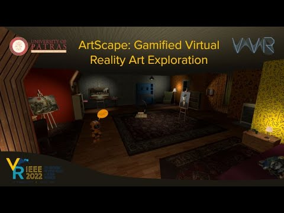
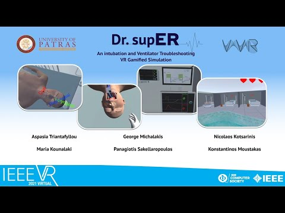
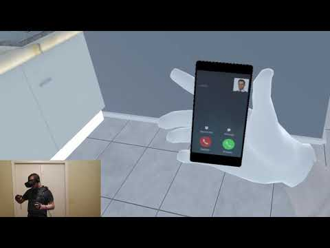
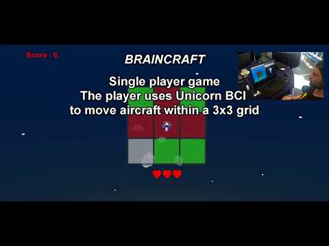

Applied research / University of Patras
VR / AR work I led and built.
Interactive research projects spanning VR training, art exploration, health simulation, and brain-computer interfaces. Select a project to watch its demo.

IEEE VR 2022 / 3DUI
ArtScape
Gamified virtual-reality art exploration: an escape-room experience where paintings become interactive worlds.

IEEE VR 2021 / 3DUI finals
Dr.supER
A gamified VR simulation for intubation and ventilator troubleshooting in a high-pressure emergency-room setting.

Immersive health simulation
VR Schizophrenia Simulation
An immersive simulation designed to make an otherwise difficult-to-explain experience more tangible.

IEEE BIBE 2019 / BR41N.IO
BR41N.IO Hackathon
A hands-on brain-computer-interface hackathon project developed with the VVR Group.